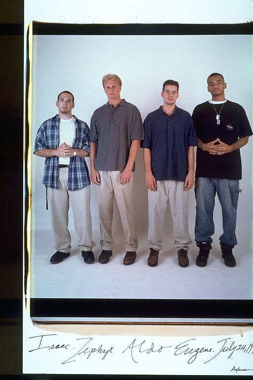

Pals: Boys Who Grew Up Together
elsadorfman.com/pals
Eugene: Zephyr:
Secher, Splefer, Thor, The Great White Hope, a man of many faces. All I can
say about Zeph is he has a great heart. He had the total package: tall, good- looking, long blonde hair, killer athlete, intelligent, but then URL HAM COLLEGE..... down hill baby.......just joking. Zeph is my man, since we
used to play soccer on TEAM SUSSMAN. I remember many a night on
Crownshield Road, sneaking into BU, MIT or Harvard to play ball. Zephyr was
definitely resourceful from an early age.
Aldo: This picture was taken about midway through all of our college careers. Zeph had transferred to my school in Indiana (from UC Santa Cruz), a move which is still debated among friends behind closed doors. Actually me and Zeph had spent the first part of the summer in Cali, so we were bummed to be back East. But of course being able to hang out again with Isaac and Eugene made it okay. But besides that this picture has a really weird dynamic, but I can't really put my finger on it, can you?

elsad@comcast.net